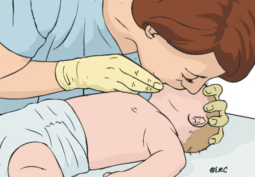

Srčni zastoj je stanje, kjer je neposredno ogroženo življenje posameznika. Preživetje je odvisno od hitre prepoznave, klica na številko 112, takojšnjih temeljnih postopkov oživljanja, hitre defibrilacije in nadaljnjih ukrepov, ki jih opravljajo za to usposobljene reševalne službe. Velik vpliv na preživetje imajo laiki in očividci, ki so največkrat prvi prisotni ob bolniku, ki ima srčni zastoj. V nadaljevanju so opisani temeljni postopki oživljanja dojenčka in večjega otroka. Zaradi anatomskih in fizioloških posebnosti v omenjenih starostnih skupinah se tudi pristop in izvajanje temeljnih postopkov oživljanja razlikujejo v primerjavi z oživljanjem odraslega. Razlike so predvsem v sproščanju dihalne poti, v dajanju umetnega dihanja in pri zunanji masaži srca. Srčni zastoj se v omejenih starostnih skupinah zgodi zaradi zaprte dihalne poti in težav z dihanjem, ki vodijo v odpoved srca. Smrtno nevarne motnje srčnega ritma, ki potrebujejo defibrilacijo, se pojavijo zelo redko (osem do deset odstotkov). Mejniki med otrokom in odraslim so sekundarni spolni znaki (puberteta).
TEMELJNI POSTOPKI OŽIVLJANJA DOJENČKA (do enega leta)
1. Zagotovi varnost reševalca in dojenčka.
2. Preveri dojenčkovo odzivnost: nežno ga pocukaj, uščipni in glasno vprašaj: "Ali si v redu?"
3. Če se dojenček odzove s kretnjami ali premikanjem:
- naj bo v položaju, v katerem je bil najden (če ni kakorkoli ogrožen)
- preveri njegovo stanje in po potrebi poišči pomoč
- redno ocenjuj njegovo stanje
3.1 Če se dojenček ne odzove:
- pokliči pomoč
- previdno ga obrni na hrbet
- sprosti dojenčkovo dihalno pot, tako da je glava v nevtralnem položaju (glave ne zvračamo nazaj), in spodnjo čeljust z dvema prstoma dvigni nad zgornjo
- ne pritiskaj na mehka tkiva pod brado, saj lahko zapreš dihalno pot
4. Med vzdrževanjem odprte dihalne poti glej, poslušaj, občuti normalno dihanje s približevanjem svojega obraza k dojenčkovemu:
- opazuj premike prsnega koša
- poslušaj pri dojenčkovem nosu in ustih dihalne šume
- občuti izstopanje izdihanega zraka
Slika 1: Sprostitev dihalne poti pri dojenčku in ocena dihanja
V prvih minutah po srčnem zastoju lahko dojenček počasi in neredno lovi sapo. Glej in poslušaj največ deset sekund, preden se odločiš – če dvomiš o tem, ali je dihanje normalno, ukrepaj, kot da ne diha.
5. Če dojenček diha normalno:
- ga obrni v stabilni bočni položaj
- pošlji nekoga po pomoč ali pokliči 112
- ves čas opazuj dihanje
5.1 Če dihanje ni normalno ali dojenček ne diha:
- previdno odstrani vse ovire
- daj začetnih pet vpihov
Vpihi za dojenčka:
- glava mora biti v nevtralnem položaju, brada dvignjena
- vdihni in pokrij z ustnicami usta in nos dojenčka, pri čemer mora stik dobro tesniti. Če ni mogoče hkrati pokriti nosu in ust pri doraslejšem dojenčku, naj poskuša reševalec s svojimi usti pokriti le njegov nos ali usta (če vpihuješ skozi nos, zapri usta, da preprečiš uhajanje zraka)
- vpihuj enakomerno v usta ali nos dojenčka eno sekundo do sekundo in pol oziroma toliko časa, da opaziš dvigovanje prsnega koša
- vzdržuj položaj glave in dvignjeno brado, odmakni usta od dojenčkovih ust ali nosu in opazuj spuščanje prsnega koša med izdihom
- ponovno vdihni in petkrat ponovi zaporedje

Slika 2: Umetno dihanje pri dojenčku
6. Oceni dojenčkov krvni obtok
Ne porabi več kot deset sekund za preverjanje življenjskih znakov – ti vključujejo vsakršen premik, kašljanje ali normalno dihanje (nenormalno lovljenje sape ali redke neredne vdihe).
7. Če dojenček ne zadiha, se ne premakne (znaki krvnega obtoka) ali pa nisi prepričan, da so znaki krvnega obtoka prisotni, začni zunanjo masažo srca in umetno dihanje v razmerju 30:2.
Tehnika masaže srca pri dojenčku:
Tehniko zunanje masaže srca je pri dojenčkih treba izvajati z dvema prstoma (kazalcem in sredincem). Točka za masažo je širina enega prsta nad žličko. Dojenček mora ležati na trdi, ravni podlagi. Glavni poudarki so doseganje zadostnega števila masaž na minuto, ustrezna globina vtisa, minimalno prekinjanje masaže in izogibanje hiperventilaciji. Narediti je treba 100 do 120 masaž na minuto. Razmerje zunanje masaže srca in umetnega dihanja za laike je 30:2, priporočena globina posamezne kompresije je pri dojenčkih štiri centimetre, kar pomeni, da je treba doseči pritisk ene tretjine globine prsnega koša pri posameznem vtisu.
Slika 3: Zunanja masaža srca pri dojenčku
8. Oživljamo, dokler dojenček ne pokaže znakov življenja (spontano dihanje, pulz, premikanje), dokler ne prispe strokovna ekipa ali dokler se ne utrudimo.
Posnetek TPO za dojenčka: klikni tukaj
Kdaj pokličemo 112?
Če je pri oživljanju dojenčka prisotnih več reševalcev, je treba nujno medicinsko pomoč poklicati takoj. Če pa oživljamo otroka sami, najprej eno minuto oživljamo, nato pokličemo nujno pomoč. Edina izjema pri tem pravilu enominutnega oživljanja pred klicem pomoči je, da smo zagotovo prepričani, da je vzrok kolapsa smrtno nevarna motnja srčnega ritma (prirojena srčna napaka, nenaden kolaps, poškodba z električnim tokom). V tem primeru takoj, ko ugotovimo neodzivnost in odsotnost dihanja, pokličemo njuno pomoč na številko 112.